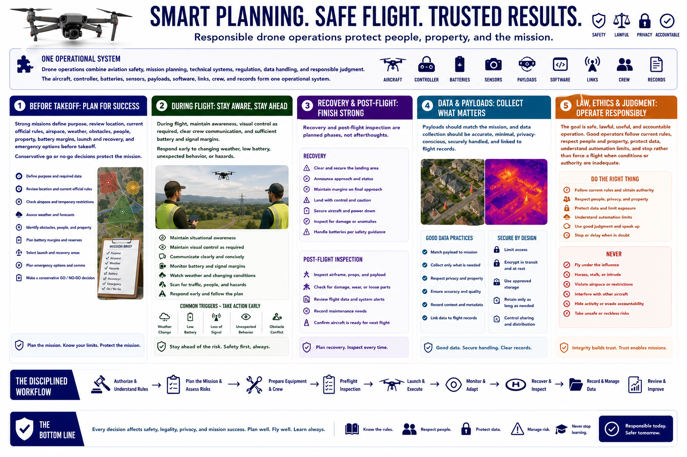

Course Summary and Key Takeaways
Connecting to LMS... Progress: in progress

Narration
Drone operations combine aviation safety, mission planning, technical systems, regulation, data handling, and responsible judgment. The aircraft, controller, batteries, sensors, payloads, software, links, crew, and records form one operational system.
Strong missions define purpose, review location, current official rules, airspace, weather, obstacles, people, property, battery margins, launch and recovery, and emergency options before takeoff. Conservative go or no-go decisions protect the mission.
During flight, maintain awareness, visual control as required, clear crew communication, and sufficient battery and signal margins. Respond early to changing weather, low battery, unexpected behavior, or hazards. Recovery and post-flight inspection are planned phases.
Payloads should match the mission, and data collection should be accurate, minimal, privacy-conscious, securely handled, and linked to flight records. Logs and after-action reviews support maintenance, accountability, and improvement.
The goal is safe, lawful, useful, and accountable operation. Good operators follow current rules, respect people and property, protect data, understand automation limits, and stop rather than force a flight when conditions or authority are inadequate.